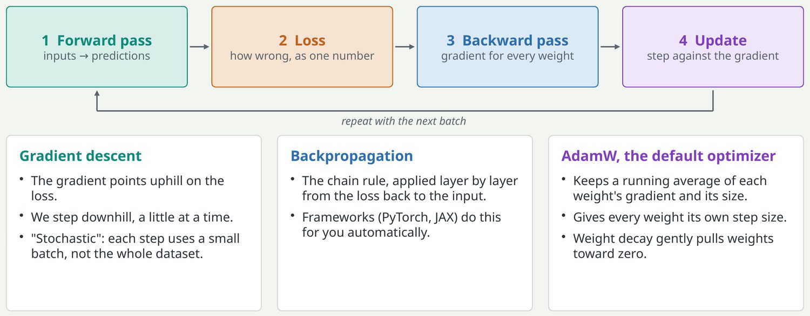
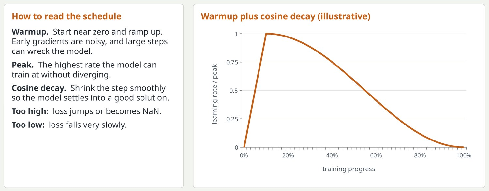
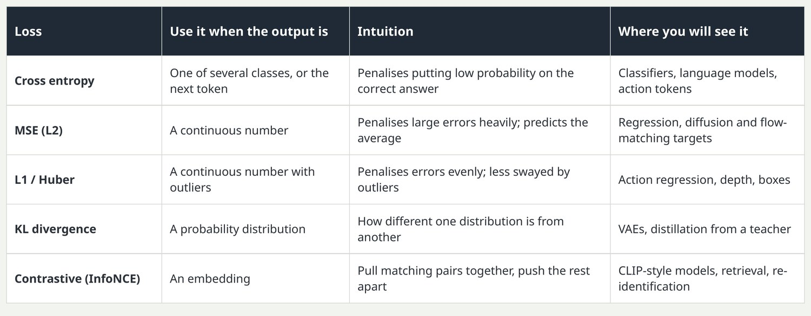
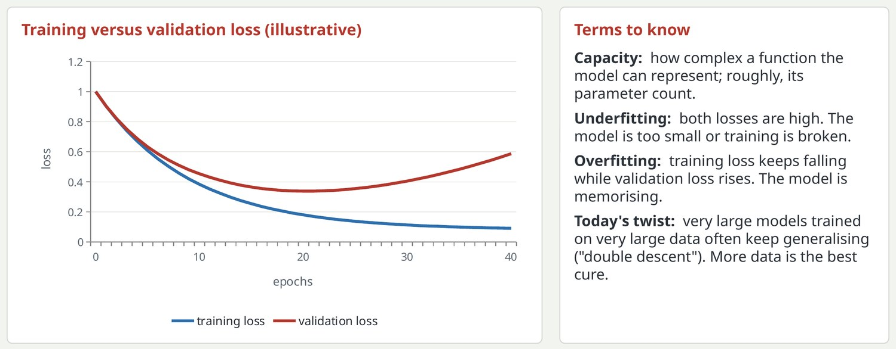
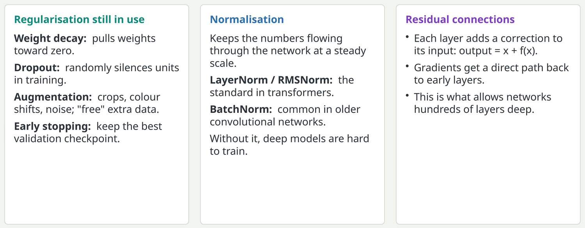

The training loop: four steps, repeated millions of times
Every model in this deck, from a small classifier to a robot foundation model, is trained this way.

Forward pass: the model turns a batch of inputs into predictions. Loss: one number that says how wrong the predictions are. Backward pass: backpropagation applies the chain rule to find how much each weight contributed to the loss; that is the gradient. Update: the optimizer nudges every weight a small step against its gradient. AdamW is the default optimizer today: it scales each weight's step by its own gradient history and applies weight decay separately.
Key pointTraining is a search for weights that make the loss small on data the model has not memorised.
Learning rate: warm up, then decay
The learning rate is the size of each update step, and it is the most important number you will tune.

Warmup matters most for transformers. The curve is illustrative: a short linear ramp followed by a cosine. Important check for later: make sure the model reaches its plateau while the learning rate is still meaningfully above zero. A metric that stops improving only because the schedule reached zero is not converged.
Key pointIf training diverges or stalls, look at the learning rate before anything else.
Loss functions: telling the model what "wrong" means
The loss is the only signal the model gets, so choosing it is choosing what the model cares about.

Cross entropy is what every language model trains with: predict the next token. MSE predicts the mean, which is why naive action regression blurs between two valid ways to do a task; that problem is what diffusion policies solve later in the deck. Contrastive losses do not need labels, only pairs known to match.
Key pointPick the loss that matches the kind of output: a class, a number, a distribution, or a similarity.
Overfitting, underfitting and capacity
The goal is low error on data the model has never seen, not on the data it trained on.

This is the one content slide that existed in the old deck. The classic picture still holds for small data: stop when validation loss turns up. The modern caveat is that heavily over-parameterised models trained on huge datasets can pass through the overfitting regime and improve again, which is called double descent. For junior engineers the practical rule is simple: always hold out data, and always plot both curves.
Key pointWatch the gap between training and validation loss; that gap is overfitting.
The stabilisers: regularisation, normalisation and residuals
Three small ideas that make deep networks trainable and keep them from memorising.

L1 and elastic net from the old deck are rarely used in deep learning now; weight decay is the form of L2 that survived. Augmentation is especially important in robotics because robot data is scarce: random crops and colour jitter make policies more robust to camera changes. Residual connections come from ResNet (2015) and are in every transformer.
Key pointResidual connections and normalisation make deep models trainable; regularisation makes them generalise.